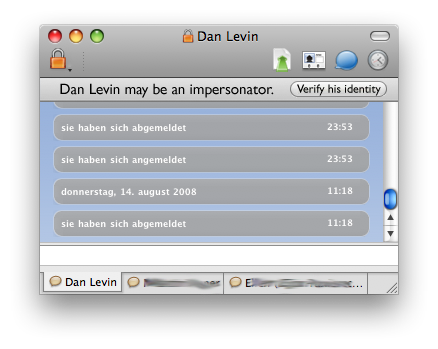
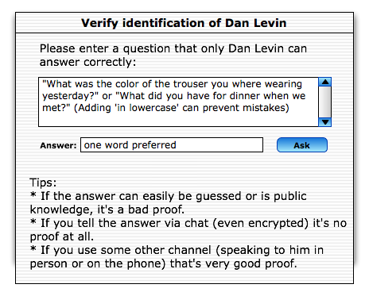
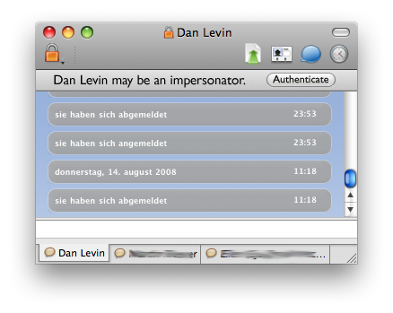
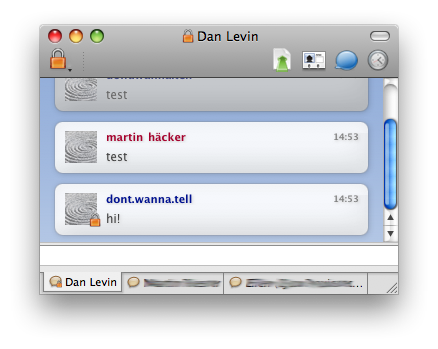
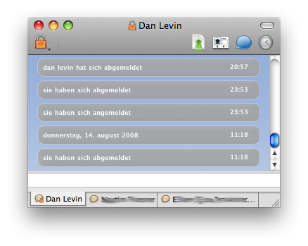
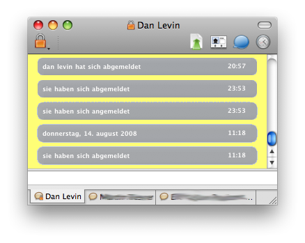
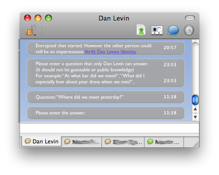

So I want to be able to chat to my buddies in private. This is still very hard - one has to have all sorts of knowledge about encryption to get it right and even then the process is painful and hard to get right. Well, it's time to do something about it. Adium has supported OTR for some time now, and OTR recently gained the ability to use the Socialist Millionaire Protocol as a means for authenticating chat partners to each other. The problem is, It's just not yet implemented in Adium.
We'd like to change that.
(Disclaimer: Imagine in long and fearful words me saying that this is not final and is just part of my thinking process and stuff I want to get feedback on)
The obvious first thing to do is to think about the GUI and what I want to achieve there. Adium is quite good, in that it's reasonably easy to set it up so that as much as possible is encrypted, or to start encryption by just a single mouse click. The most pressing problem lies in that it's very hard to verify that a buddy really is who he claims to be. This is because both users have to read and confirm a 20-something digit fingerprint to each other out of the band of im communication (preferably over the phone or in person).
The Socialist Millionaire Protocol offers an alluring alternative - in theory, authentication is now as simple as you asking your partner a question that only he can answer correctly. If he provides the correct answer, dual-sided, authenticated encryption can be established. However, as shown in a usability study on the Pidgin implementation of OTR bad GUI-Design can still ruin this great idea.
So lets get think about how we can make this work as seamlessly as possible.
Here's the example user that guides my thinking: Andrea, a history student wants to chat with her buddy Bert. She has no deeper understanding of computer science and cryptography, nor is she especially computer savvy. Even so she should be able to effectively secure her privacy with a few clicks and without any studying of handbooks or confusion on her part.
Two parts are needed for this to work:
1) Adium needs to inform her of the 'security status' of her connection without any doubt. This includes that it needs to show her in unambigous ways what she has to do next if she wants to get to a secure chat-connection.
2) Adium needs to allow her to run the Social Millionaire Protocol.
For 1) I have some nice ideas already. (linked to at the end of the article. For 2) I'm still not very far. The obvious way would be to just open another window - but thats merely ok GUI-Design as it completely disrupts whatever the user wanted to do. Another alternative could be to do it inline in the chat window - but this leads to all sorts of confusion, as the chat window suddenly becomes the interface to something completely different than chatting - something which it wasn't meant to do.
So, more drawing board needed there.
On to some mockups. :)
It's all basically the same idea. There are two ways that I see this working: either by showing the status of the chat inline in the message view - or not.
Inline has several advantages - for one, it's a lot easier to program. However, it has severe usability disadvantages. It is hard to see for example, because the font is small and who reads those system messages anyway? Also running the Socialist Millionaire Protocol requires an action by the user, so that leaves me with either adding a hyperlink to the message field to start this (which is unexpected by the user) or just explaining him what to do (which is bad, if I have to explain to him, why not just let him do it from right there?)
So I discarded that idea.
What I really like is Firefox in this regard. Their way of showing that they just suppressed a popup or a cookie is just a perfect example of the kind of interface I have in mind. Easy to see, enough space to put a button and a nice way to tell the user some status that doesn't disturb his workflow if he doesn't bother / can't do anything about it right now.
So I have something like this in mind:

This fits my requirements pretty good (more Ideas I toyed with at the end of the article). It clearly states what is happening, and gives the user an immediate means to do something about it. No confusion possible.
Well, to be frank, wording is still a problem. "Verify his identity" is very long, and will be much longer in german. Same for the first sentence. Some users may also react with a heartfelt: "Now you tell me, when I tried to turn encryption on?". Also what if the user just doesn't care?
Well, I'l ponder that some more.
Next stop: Actually doing the Socialist Millionaire Protocol.
After the user clicks the darned button, there be dragons. As I said above, I briefly toyed with the idea of doing everything inline the message view, however decided against that. My current working thesis is this:

This dialog has some merits: It clearly states what the user is supposed to do. It gives hints on how to do it and what to avoid, and it is mostly text.
Well.... I'm not very content with it yet. Also I haven't had a good look at how Pidgin actually implements this feature (I wanted to build my own ideas unobstructed first).
Well, onto that later.
Here's the rest of my WIPs:

Note the lock in the menu-bar that also tells me the status of the conversation is private (to make the easy to miss lock in the toolbar more prominent.
I toyed with placing more locks, here's some results:


Just repeating something that doesn't work seems, to force it to work seems foolish though, so I thought about more radical approaches, of which I like this the most:

The problem is to communicate to the user that he is in a completely different status now, and make it accessible at a glance. Well, why dont just change the background color? Again Firefox is an example here, when surfing to a secure site, the status bar is rendered completely different to give the user good feedback. Why not apply that to Adium?
Oh and the inline SMP implementation:

Well.... It could be made to work... from a technological standpoint. :) Maybe it sparks some new ideas.
Want to read more?